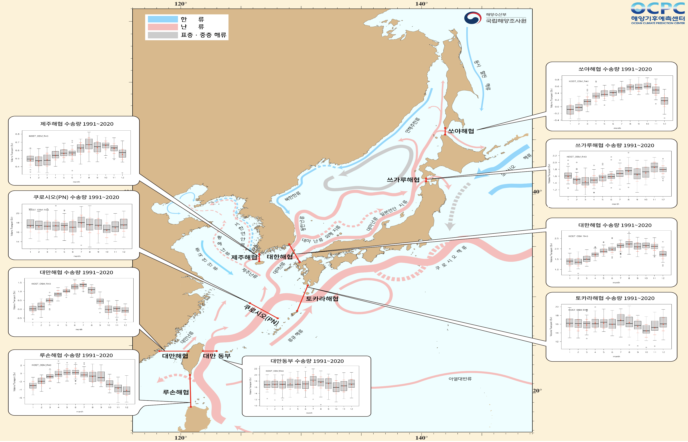
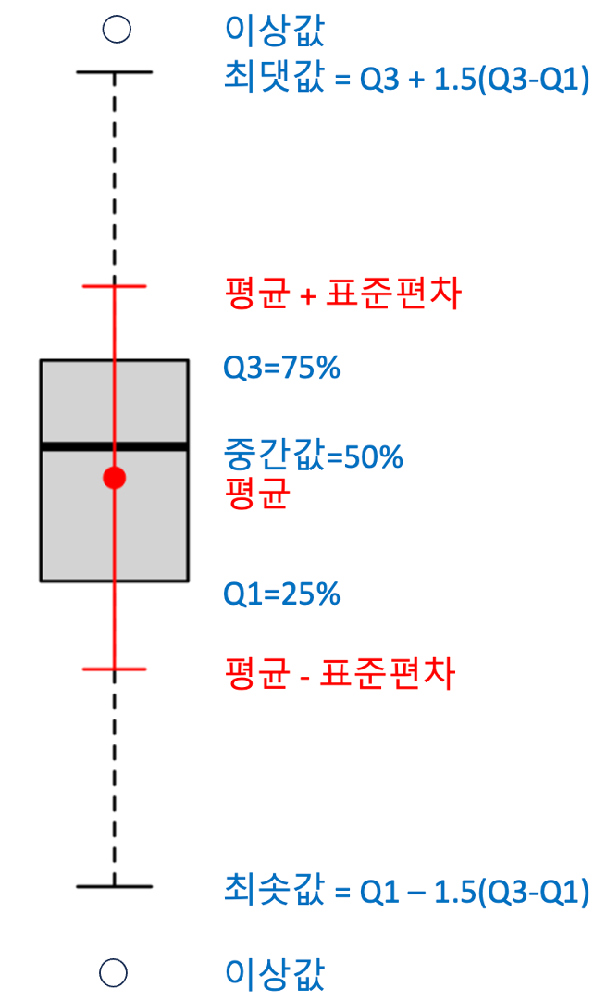

주요 해류 수송량 정보 예시
한국해양과학기술원 전지구 해양시스템 모형
(KIOST-Ocean System Model, KOSM)으로 생산한
주요 해협을 통과하는 해류 수송량의
기후 평년 (1991~2020) 변동성 예시
{kind=link}

<참고> 상자 그림(Boxplot)의 이해
{kind=link}

[해류 수송량의 단위] 해류(Oceanic Current)의 체적 수송량(Volume Transport)은 단위 시간(초,s)당 어떤 단면을 통과하는 유량의 부피( )로 표현하며, 초당 1백만톤씩 흐르는 수송량 ()을 1 Sv (스베드럽, Svedrup)이라 한다. Svedrup은 노르웨이의 해양학자이자 기상학자이며 미국 스크립스 해양연구소장과 노르웨이 극지연구소장을 지냈던 Harald Ulrik Sverdrup (1888~1957)의 이름을 따서 명명했다. 1 Sv의 수송량은 세계에서 가장 방류량이 많은 아마존 강 평균 방류량의 약 5배에 해당하는 수송량이며, 우리나라에서 가장 큰 소양감댐 최대 방류량(초당 5,500톤)의 약 180배에 달한다.
[해류 수송량은 왜 알아야 할까?] 바닷물에는 다양한 원소가 녹아 있으며, 위치에 따라 수온, 염분 등 해수의 물리적 성질과 영양염, 플랑크톤 등 해수의 생지화학적-생태학적 특성이 다르다. 해류는 한 위치에 있는 이런 해수의 특성을 다른 곳으로 옮기는 역할을 하는데, 문제는 이동 과정 중에 다양한 물리-생지화학-생물-지질학적 환경 변화를 겪으며 온도나 농도 등이 변한다. 따라서 해류 수송량은 관심 있는 해역의 특성이 물리적인 이동에 의해서 어떻게 바뀌며, 그 해역에 얼마나 많은 열에너지와 물질을 수송하는 지를 판단하는 기준이 된다. 여기에 더해서 다른 물리 현상 (바람과 파도에 의한 해수의 연직 혼합 또는 용승, 해양과-대기 사이의 열에너지, 수분, 기체의 교환)과 생지화학-생태학적 과정 (식물플랑크톤의 번성, 먹이 사슬을 통한 에너지 전이, 오염물질의 유입, 혼합 등) 등에 의한 해양의 변화를 추적하고, 필요에 따라 적절한 대응을 하는 데 있어서 반드시 알아야 할 필수 변수이다. 해류를 통한 전지구적 해양 순환은 지구의 열에너지와 물질의 수송 및 재분배 과정을 통해 기후를 조절한다.
쿠로시오 해류 수송량 변동성
대만 동부해역 통과 수송량

P-N 단면 통과 수송량

토카라 해협 통과

루손 해협

대만해협

제주 난류
제주해협

동해 통과류 (쓰시마 난류)
동해 통과류(East Sea Throughflow)는 공식적으로 인정되는 용어는 아니며, 쓰시마 난류가 대마도(쓰시마섬)를 통과하는 해류라는 성격이 강하기에 쓰시마 난류, 동한난류, 일본분지류 등을 합쳐 모두 동해를 통과하는 해류로 보자는 일부 해양학자들의 의견을 반영한 것입니다.
대한해협

쓰가루 해협

소야 해협